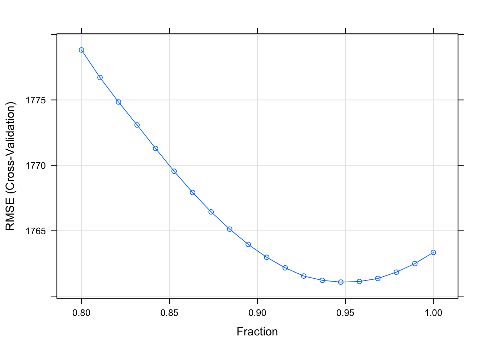
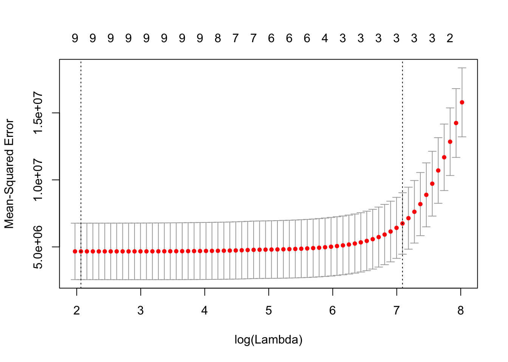

第11章 广义线性模型压缩方法及glmnet包
之前只是对线性回归使用罚函数。不难理解，这样的罚函数可以用于很多其它回回归函数的优化上，比如逻辑回归，泊松回归等。glmnet包能够通过罚极大似然函数拟合广义线性回归，也就是在似然函数上加上罚函数，和之间在RSS上加罚函数类似。之前的线性回归的情况是广义线性回归的一个特例。和之前一样，罚函数的选择可以是一阶范数和二阶范数的一个组合。glmnet包可以对一系列调优参数值同时计算参数估计。除了线性回归外，该包可以拟合的广义线性模型还有：逻辑回归、多项式回归，泊松回归，cox回归。glmnet包的作者是Jerome Friedman、Trevor Hastie、Rob Tibshirani和Noah Simon，当前的R包由Trevor Hastie维护。该包还有一个matlab版本。
广义线性模型压缩方法可以表达成优化下面方程：
\[\underset{\beta_{0},\mathbf{\beta}}{min}\frac{1}{N}\Sigma_{i=1}^{N}w_{i}l(y_{i},\beta_{0}+\mathbf{\beta^{T}x_{i}})+\lambda[(1-\alpha)\parallel\mathbf{\beta}\parallel_{2}^{2}/2+\alpha\parallel\mathbf{\beta}\parallel_{1}]\]
其中需要对一定范围内的\(\lambda\)值进行调优。其中：
\[l(y_{i},\beta_{0}+\mathbf{\beta^{T}x_{i}})=-log[\mathcal{L}(y_{i},\beta_{0}+\mathbf{\beta^{T}x_{i}})]\]
也就是似然函数\(\mathcal{L}(y_{i},\beta_{0}+\mathbf{\beta^{T}x_{i}})\)取对数后再加负号，最大化似然函数即等价于最小化\(l(y_{i},\beta_{0}+\mathbf{\beta^{T}x_{i}})\)。参数\(\alpha\)控制了弹性网络罚函数，即在岭回归（\(\alpha=0\)）和lasso（\(\alpha=1\)）之间权衡。\(\lambda\)控制了罚函数的总体权重，其值越大，罚函数相对于似然函数的权重越高。
之前我们已经讲过，岭回归的罚函数能够将参数估计向0收缩，但是不能收缩为0。而lasso的罚函数能够将参数严格收缩为0，因而具有变量选择功能。弹性网络的罚函数结合了这两者。这里的\(\alpha\)也是需要估计的参数。glmnet包使用的是循环坐标下降法（cyclical coordinate descent），这是一种非梯度优化算法。算法每次针对一个参数优化目标方程，固定所有其它参数，然后转向另外一个参数，如此循环直到收敛。
11.1 初识glmnet
在介绍具体不同的广义线性模型压缩方法之前，先让大家熟悉一下这个R包的基本使用方式。我会简单的介绍下其中的主要函数，功能，和输出。这样大家对这个包能做什么有个大致的概念。后面的小节会分别介绍不同模型。
默认设置下的模型是高斯线性回归或者最小二乘模型，也就是之前几个小节介绍的模型，只是参数化的方式略有不同，但都是RSS加上一个罚函数。所以我们还是从之前服装消费者数据集中的自变量和应变量开始：
library(glmnet)
dat<-read.csv("/Users/happyrabbit/Documents/GitHub/DataScientistR/Data/SegData.csv")
# 对数据进行一些清理，删除错误的样本观测，消费金额不能为负数
dat<-subset(dat,store_exp>0 & online_exp>0)
# 将10个问卷调查变量当作自变量
trainx<-dat[,grep("Q",names(dat))]
# 将实体店消费量和在线消费之和当作应变量
# 得到总消费量=实体店消费+在线消费
trainy<-dat$store_exp+dat$online_expglmfit=glmnet(as.matrix(trainx),trainy)这里函数glmnet()返回的对象glmfit中含有所有之后可能进一步会用到的模型拟合信息。大家并不需要手动的检查glmfit中都有那些信息，然后提取相应的部分，而是可以通过plot()、coef()、predict()这类耳熟能详的函数来得到相应的信息。比如我们可以用如下方式绘制lasso的参数选择路径图：
plot(glmfit,label=T)
图中每种颜色的线代表对应一个自变量，展示的是随着lasso罚函数（也就是一阶范数，有时也称为\(l_{1}-norm\)）对应调优参数\(\lambda\)变化，各个变量对应的参数估计路径（注：当\(\alpha=1\)时，优化方程里就只有lasso罚函数）。图中有上下两个x轴标度，下x轴是\(\lambda\)变化对应最优解的一阶范数值（也就是\(\parallel\mathbf{\beta}\parallel_{1}\)），上x轴是相应\(\lambda\)值对应的非0参数估计个数，也就是lasso模型的自由度。我们可以查看路径的具体每一步信息：
print(glmfit)Call: glmnet(x = as.matrix(trainx), y = trainy)
Df %Dev Lambda
[1,] 0 0.0000 3042.000
[2,] 2 0.1038 2771.000
[3,] 2 0.1919 2525.000
[4,] 2 0.2650 2301.000
[5,] 3 0.3264 2096.000
[6,] 3 0.3894 1910.000
[7,] 3 0.4417 1741.000
[8,] 3 0.4852 1586.000
[9,] 3 0.5212 1445.000
[10,] 3 0.5512 1317.000
[11,] 3 0.5760 1200.000
[12,] 3 0.5967 1093.000
[13,] 3 0.6138 996.000
[14,] 3 0.6280 907.500
...这里第一列Df表示非零估计的参数个数，%Dev解释的方差百分比，以及Lambda调优参数\(\lambda\)的取值。虽然在默认设置下，glmnet会尝试100个不同的\(\lambda\)取值，但如果随着\(\lambda\)的减小，%Dev百分比只发生微小变化的时候，算法也会提前停止，上面的例子算法就只计算了68个不同的调优参数取值。我们也可以通过指定一个\(\lambda\)的取值来得到对应的参数估计，其中s=用来指定调优参数值：
coef(glmfit,s=1200)## 11 x 1 sparse Matrix of class "dgCMatrix"
## 1
## (Intercept) 2255.2221
## Q1 -390.9214
## Q2 653.6437
## Q3 624.4068
## Q4 .
## Q5 .
## Q6 .
## Q7 .
## Q8 .
## Q9 .
## Q10 .在\(\lambda=1200\)时，只有3个变量（Q1、Q2和Q3）的参数估计非0。你也可以用新数据对一个或多个\(\lambda\)值进行预测。我们随机抽取3个观测作为新数据，然后用predict()函数得到针对多个\(\lambda\)值的预测：
newdat=matrix(sample(1:9,30,replace = T),nrow=3)
predict(glmfit,newdat,s=c(1741,2000))## 1 2
## [1,] 3337.144 3394.986
## [2,] 6559.382 6186.969
## [3,] 6831.266 6765.357结果中每列分别对应一个\(\lambda\)取值的预测。这里需要通过交互校验进行参数（\(\lambda\)）调优。glmnet包中的cv.glmnet()可以实现这一目标。
cvfit=cv.glmnet(as.matrix(trainx),trainy)cv.glmnet()会返回一个列表，其中包括交互校验过程的结果，我们将该结果存在cvfit这个对象里。 我们可以对交互校验结果可视化：
plot(cvfit)
红色的点是不同\(\lambda\)取值对应的交互校验均方误差，灰色的线是相应置信区间。两条虚线表示选中的两个调优参数。左边的那个调优参数值对应的是最小的交互校验均方误差，右边的那个调优参数值是离最小均方误差一个标准差的调优参数值。我们可以通过下面代码查看根据两种不同规则选中的调优参数值：
# 最小均方误差对应的参数值
cvfit$lambda.min## [1] 7.893144# 一个标准差原则下对应的参数值
cvfit$lambda.1se## [1] 1199.688我们也可以按如下方式查看不同调优参数值对应的回归参数（注意这里不是调优参数估计）估计：
# 一个标准差原则下对应的回归参数估计
coef(cvfit,s="lambda.1se")## 11 x 1 sparse Matrix of class "dgCMatrix"
## 1
## (Intercept) 2255.3136
## Q1 -391.0562
## Q2 653.7079
## Q3 624.5119
## Q4 .
## Q5 .
## Q6 .
## Q7 .
## Q8 .
## Q9 .
## Q10 .11.2 线性回归
普通线性回归是广义线性回归框架下的一种特殊情况。这里将要介绍的是之前章节中线性回归的收缩方法的另外一种实现方式。之后我们会介绍广义框架下更多模型的收缩方法：逻辑回归，多项回归和泊松回归。
线性回归有两种，一种是我们已经介绍过的属于高斯（gaussian）家族的模型，其中应变量是一个向量。另外一种是多元高斯（multivariate gaussian），也就是多元响应变量的情况，这时应变量是一个矩阵，参数也是矩阵。我们着重介绍用glmnet包实现普通高斯收缩回归。
假定自变量观测\(\mathbf{x_{i}}\in \mathbb{R}^{p}\)，应变量\(y_{i} \in \mathbb{R},\ i=1,\dots,n\)。这里的收缩线性回归目标是找到能够优化下面方程的参数估计，这和前一章参数化的方式略有不同，但本质是相同的：
\[\underset{(\beta_{0},\mathbf{\beta})\in \mathbb{R}^{p+1}}{min}\frac{1}{2n}\Sigma_{i=1}^{n}(y_{i}-\beta_{0}-\mathbf{x_{i}^{T} \beta)}^2+\lambda [(1-\alpha)]\Vert\beta\Vert_2^2/2+\alpha\Vert\beta\Vert_1\] 其中\(\lambda>0\)是总体的复杂度参数，\(0\leq\alpha\leq1\)是权衡lasso（\(\alpha=1\)）和ridge（\(\alpha=0\)）罚函数的参数。glmnet提供了定义各种参数设置的选项。下面是一些通常需要用到的参数设置：
alpha：上面优化函数中的\(\alpha\)，默认设置是\(\alpha=1\)，也就是lasso回归，你可以将其设置为0进行岭回归。\(\alpha\in[0,1]\)。weights： 每个观测的权重，默认设置下每个观测的权重都是1，权重总和就是参数个数n。你也可以自定义每个观测的权重，但是glmnet包会自动将你设置的权重标准化，使得权重之和总是n。nlambda：调优参数\(\lambda\)的取值个数，默认设置是100。函数会自行生成一个含有nlambda个\(\lambda\)取值的向量进行调优。这些值的选取基于两个量：lambda.max和lambda.min.ratio。前者是最大的lambda值，在\(\alpha\)不为0的情况下，一阶范数罚\(\Vert\beta\Vert_1\)使得存在一个\(\lambda\)取值时所有的参数估计都收缩为0，也就是模型中只有截距项。这个取值就是lambda.max。当\(\alpha＝0\)的时候，lambda.max将是无穷大，因此在这种情况下，函数会自动选择一个很小的\(\alpha\)值用来计算lambda.max。具体背后的数学原理，可以参考上一章的“知识扩展：Lasso的变量选择功能”小节。lambda.min.ratio是向量中最小的\(\lambda\)取值与最大\(\lambda\)取值的比例。如果lambda.min.ratio＝0，表明调优参数\(\lambda\)的取值向量分布从0到lambda.max。lambda：如果不用设定nlambda的方式，你也可以通过设定lambda这个参数自己定义调优参数值向量。standardize：用来告诉函数是否标准化自变量的逻辑值。默认设置为standardize=TRUE。